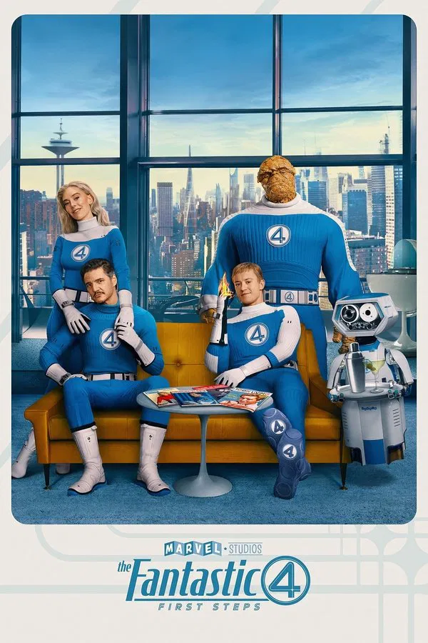
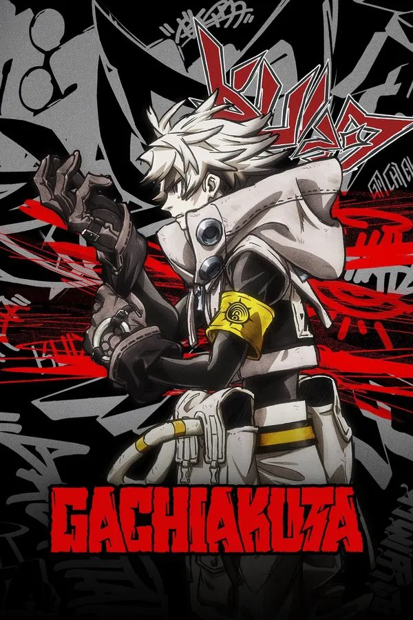
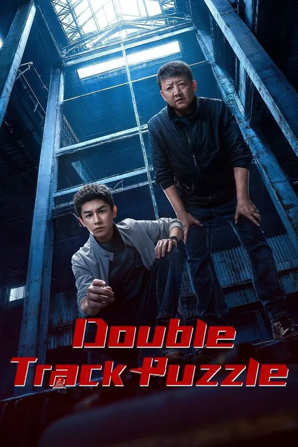

MovieFlex
HOME
MOVIES
TV SHOWS
WATCH LIST
ABOUT
Sign Out
Alien: Earth
Add List
Weapons
Add List
F1 The Movie
Add List
Wednesday
Add List
Mission Impossible:
The Final Reckonning
Add List
Superman
Add List
Jurrasic World:
Rebirth
Add List
28 Years
Later
Add List
How To Train Your
Dragon
Add List
The Sandman
Add List
Trending
View All
Black Rabbit
Gen V
Dan Da Dan
The Dark Knight
Weapons
Superman
Togethere
Relay
Alien: Earth
Peacemaker
Wednesday
Platonic
xXx
Elio
Nobody 2
Popular
View All
Prisoner of War
War of the Worlds
Alien: Earth
Alice in Borderland

The Fantastic Four: First Steps
The Conjuring: Last Rites
Breaking Bad
The Naked Gun
Ice Road: Vengeance
Prison Break
Jurassic World: Rebirth
Marvel Zombies
How to Train Your Dragon

Gachiakuta
Superman
Latest
View All
The Delay
The Resemblance
Wild Ambition Bloom
Beyond the Loop
Mauler

Double Track Puzzle
The Murky Stream
Red Static Rising
One Of One
Cat's Eye
Bitter Souls
Love's Ambition
Easter Bunny Massacre: The Bloody Trail
Just Breathe
Peacemaker